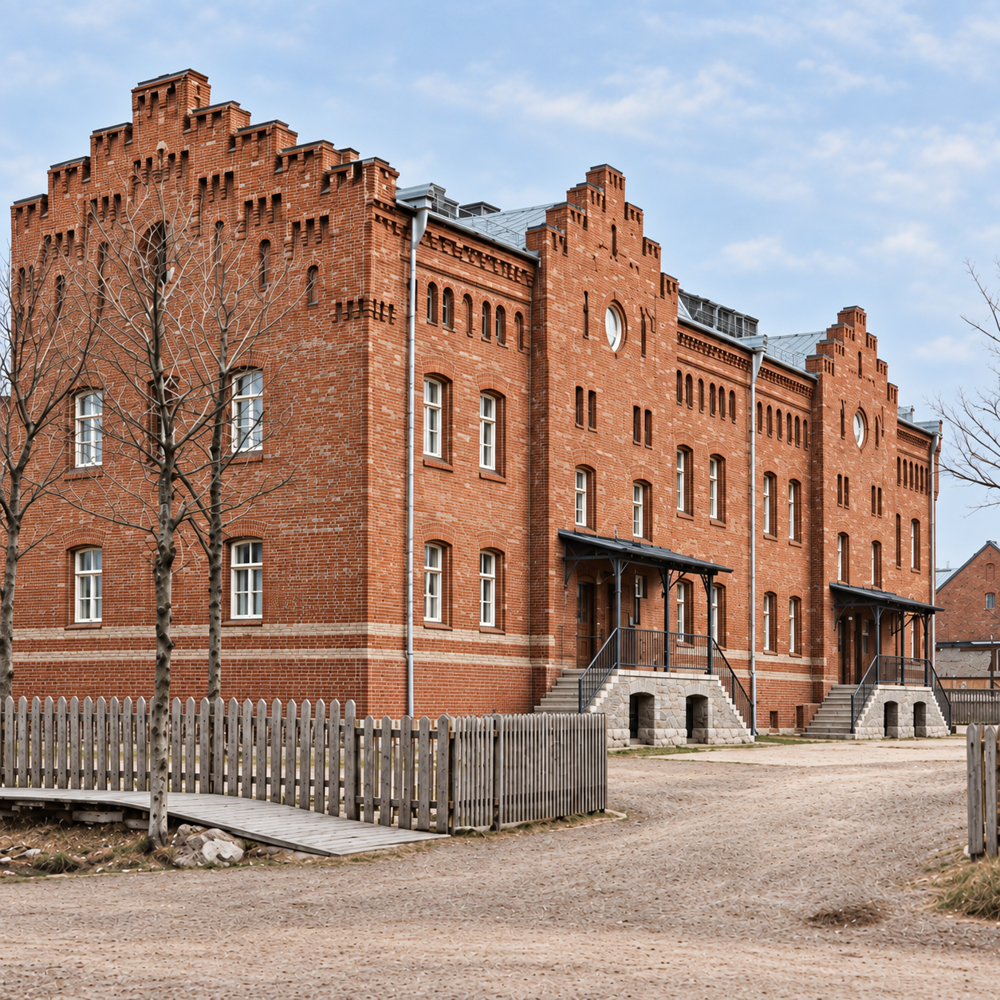

KREENHOLMI INGLISE MEISTRITE ELAMU
Hoiame maja.
Kanname edasi
selle lugu.
Hoiame Kreenholmi Inglise Meistrite Elamu, et säilitada selle ehe ilme ja mälestus inimestest. Meie eesmärk on anda see kultuuripärand edasi tulevastele põlvedele.
Meie eesmärk
Enamat
kui seinad.
Kultuuripärandi moodustab see, mida ei saa uuesti luua: ehedad detailid, inimeste töö ja paiga mälu.
Kreenholmi Inglise Meistrite Elamu on osa ajaloost, mille eest tunneme vastutust. Vanas tellismüüritises ja arhitektuursetes detailides on säilinud meistrite töö. Maja hoidmine tähendab meile selle töö austamist ja tähelepanelikku suhtumist kõigesse, mis on jõudnud meie päevini.
Meie eesmärk on säilitada hoone iseloom ja tuua selle ajalugu inimestele lähemale. Fotod, mälestused ja perekonnalood aitavad näha fassaadi taga eri põlvkondade elu. Soovime, et side minevikuga püsiks ka neil, kes tulevad pärast meid.
Hoida ehedust
Säilitada maja ajalooline ilme ning austada vanu materjale ja ehitajate oskusi. Kaaluda iga muudatust hoolikalt ja teha seda hoonet säästes.
Säilitada mälu
Hoida fotosid, dokumente ja mälestusi. Iga pildi taga on inimesed ja sündmused, mis aitavad mõista maja ning selle ümbruse ajalugu.
Anda edasi
Jagada maja lugu ja selgitada selle säilitamise väärtust. Et tulevased põlved saaksid näha ehedat hoonet ja tunda sidet oma minevikuga.
Ajalugu
piltidel.
Neil fotodel on paiga ilme ja inimeste näod.
Fotosid säilitades hoiame alles mälestuse neist.
Hoiame
ühendust.
Paiga ajalugu aitavad hoida inimesed. Kui teil on maja või selle ümbrusega seotud vanu fotosid, dokumente või perekonnamälestusi, oleks meil hea meel neist kuulda. Ka väike detail võib täiendada meie ühist mälu.
KREENHOLMI INGLISE MEISTRITE ELAMU
Kultuuripärandi hoidmine
Joala 26